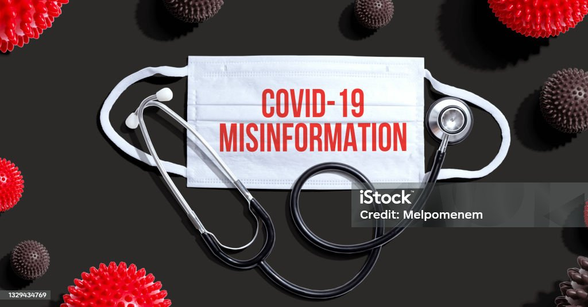

Egészségügyi hatások

1.helytelelen Egészségügyi döntések

- Az egészségügyi álhírek – például oltásellenes propaganda vagy
áltudományos kezelések hirdetése – közvetlen veszélyt jelenthetnek az
egyének egészségére.
- Példa: Az álhírek hatására sokan megtagadhatták a védőoltásokat, ami
közegészségügyi problémákhoz vezetett (pl. járványkitörések).
2.Pszichoszomatikus tünetek
- A stressz és szorongás, amelyet az álhírek generálnak,
pszichoszomatikus tünetekhez vezethet, például fejfájáshoz,
alvászavarokhoz, vagy emésztési problémákhoz.
- A hosszú távú stressz növeli a szív- és érrendszeri betegségek kockázatát.
3.Egészségügyi rendszerek túlterhelése
- Az álhírek gyakran pánikot keltenek, ami túlterhelheti az egészségügyi
rendszereket. Például hamis gyógymódokról szóló hírek hatására
emberek tömegei kereshetik fel az orvosokat, ezzel megnehezítve a valódi
betegek ellátását.
4.Öngyilkossági kockázat növekedése
- Bizonyos álhírek, például cyberbullying vagy rágalmazó kampányok,
fokozhatják a mentális terheket, különösen a fiatalok körében.
- Az érintettek úgy érezhetik, hogy nincs kiút a helyzetből, ami szélsőséges
esetekben öngyilkossághoz vezethet.
5.Hamis remények keltése
- Az álhírek gyakran ígérnek gyors és egyszerű megoldásokat súlyos
egészségügyi problémákra, például rákkezelésre vagy fogyásra.
- Ezek az álhírek megtéveszthetik a betegeket, akik emiatt elutasíthatják a
tudományos alapú kezeléseket, ami súlyosbíthatja állapotukat.
Az álhírek hatása az emberek lelki és testi egészségére rendkívül komoly. Az
érzelmi manipuláció és a félrevezetés nemcsak egyéni szinten, hanem társadalmi
szinten is veszélyt jelent. A megoldás kulcsa a kritikus gondolkodás fejlesztésében,
a hiteles információforrások támogatásában és a médiatudatosság növelésében
rejlik. Az egészségügyben és a mentális egészség területén dolgozó
szakembereknek is szerepet kell vállalniuk az álhírek elleni küzdelemben.